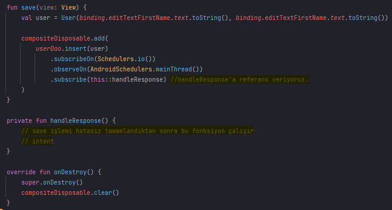
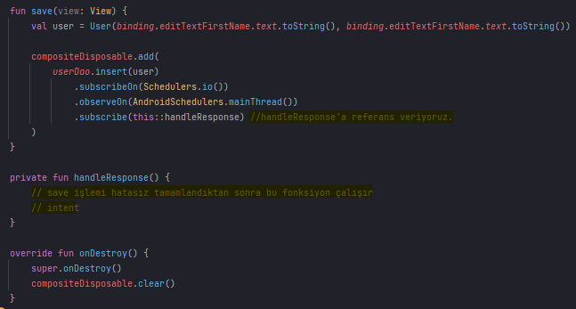

RxJava
- RxJava, JVM için geliştirilmiş bir reactive programlama kütüphanesidir.
- Reactive Extensions (ReactiveX), “observable” değişkenleri kullanarak “asenkron” ve “event-based(olay
tabanlı)” programlar oluşturmayı sağlayan bir paradigmadır.
- ReactiveX olay ve data değişikliklerini takip etmek için “observer” yapısını(pattern) kullanır.
- Observer pattern küçük multi threadler oluşturmanızı,sıralı işlemler yapmanızı,verilere filtre
uygulamanızı sağlar. Tüm bunları yaparken de program akışınızı kilitlemez.
- Asenkron(asynchronous), program parçacıklarının aynı anda farklı katmanlarda çalışmasıdır.
- Klasik program akışı yukarıdan aşağıya doğru gerçekleşir,ancak event-based programlarda akışı olay
belirler. Kod parçası çağrıldığında çalışır ve işlemi farklı bir katmanda yapıp sonucu iletir.Bu esnada
program akmaya devam eder.
Temel Unsurlar
- Flowable,Observable,Single,Completable : Bu yapılar yukarıda bahsettiğimiz observable unsurunun
parçalarıdır. Veri üzerinde işlemler yapıp,dışa aktarırlar.
- Subsciption : Observable ile Observer arasındaki bağlantıyı sağlar.
- Operator : Özelleşmiş tipleri ile veri üzerinde sıralama,filtreleme gibi birçok işlem yapmanızı
sağlar.
- Scheduler : İşlemin gerçekleştiği katmanlardır.
- Subscriber : İşlemin tamamlanmasının ardından cevabın gönderileceği yerdir.
- Observable: N elemanlı bir veriyi iletmek için kullanılabilir. İşlem bitince hata yada başarılı
şeklinde dönüş yapar. Observable dinleyicisi olarak Observer kullanılır.
- Flowable: Observable gibi n elemanlı veriyi iletmek için kullanılır. Observable’dan tek farkı
“backpressure strategy” yapısına sahip olmasıdır. Eklenenden fazla gelebilecek datalardaki taşmaları
önlemek için kullanılır.
- Single: Sadece bir değeri iletmek için kullanılır.O değeri başarıyla iletir yada hata mesajı ile
döner. onComplete metodu yoktur.
- Maybe: Single gibi sadece bir değeri iletmek için kullanılır. Singledan farkı değeri dönmek zorunda
değildir. Değer dönerse onSuccess metoduna düşer. Şayet hata alırsa da diğer tiplerde olduğu gibi
onError metoduna düşer.
- Completable: Completable herhangi bir data iletmez. İşlemin başarıyla sonuçlanıp sonuçlanmamasına göre
onComplete yada onError metodu çalışır.
 

Veri Çekme
- “userDao.getAll()” metodundan gelen verileri(list) handleResponse metodu ile alıp adapter’a
yolluyoruz.


Room
- Room kütüphanesi SQLite'ın tüm gücünden yararlanırken daha sağlam veritabanı erişimine izin vermek
için SQLite üzerinde bir soyutlama katmanı(abstraction layer) sağlar.
- Room kütüphanesi ana başlık olarak üç bölüme ayrılıyor.
- Entity -> Database modelimizi(table) temsil ediyor.
- DAO -> (Data Access Object),Interface olarak kullanılır ve bütün database
işlemleri(ekleme,silme,güncelleme,sorgu) bu interface içerisinde yapılır.
- Room Database -> Bu sınıf sayesinde bütün işlemleri yönetebiliyoruz.
Entity
- Her User instance’sı, uygulamanın veritabanındaki bir “user” table’ındaki bir row’u temsil eder.
- “@ColumnInfo” etiketiyle column’ları oluşturuyoruz.
- “@PrimaryKey” her nesnenin birbirinden farklı id oluşturmasını sağlıyor (“autoGenerate = true” kodu
gerekli)

DAO
- UserDao, uygulamanın geri kalanının “user” table’daki verilerle etkileşim kurmak için kullandığı
yöntemleri sağlar.

Database
- UserDatabase, veritabanı yapılandırmasını tanımlar ve uygulamanın kalıcı verilere ana erişim noktası
olarak hizmet eder.
- “entities” içerisine kullandığımız model sınıflar(table) yazılır.
- UserDatabase sınıfı sadece Dao sınıflarını döndüren metoda sahiptir.

Retrofit
- Bir network kütüphanesidir. Retrofit açık kaynak kodlu bir rest istemcisidir.
- REST servisler ile çalışmamız gereken durumlarda işimizi kolaylaştıran bir networking kütüphanesidir.
Not: REST; (Representational State Transfer) uzak sistemdeki mantıksal kaynakları HTTP protokolü ile
GET, POST, PUT, PATCH, DELETE methodlarını çağırarak kullanmaktır.
- http istekleri için OkHttp kütüphanesi kullanmaktadır. Android uygulama üzerinden, sunucuya gönderilen
Request’ler ile talepte bulunuruz. Sunucu bu istek karşısında, Response olarak bir JSON verisi
gönderir.
- Retrofit’in bu kadar popüler olmasında REST API’lara kolaylıkla erişebilme, test edilebilir ve kolay
kullanımı etkendir.
- AsyncTask yapısı ile yaptığımız isteklerde aşırı bir yavaş çalışma problemi ortaya çıkmıştı. Ayrıca
çoklu asynchronous işlemlerinde , ön plandaki kontroller komplike bir hale dönüşmüştü.
Model Oluşturma
- CryptoModel adında bir data class oluşturuyoruz.
- JSON formatında gelen verilerdeki value isimlerini direkt değişken olarak yazabiliriz.
(@SerializedName’e gerek yok.)
Verileri Çekme